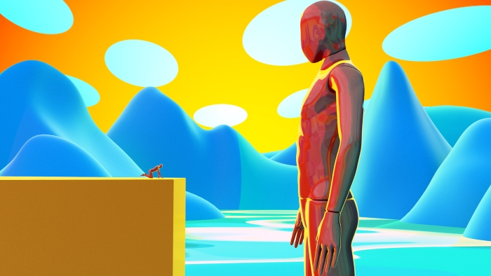
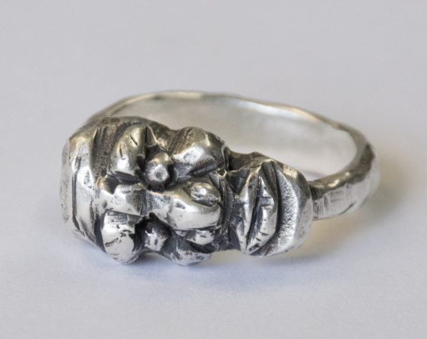

Hi, I'm Justin Dormitzer
I'm a New York City based creative technologist and motion designer on a mission to transport you to other worlds through my work.
I hold an MFA in Computer Arts from the School of Visual Arts, with a focus on motion graphics and experimental art. My work ranges from traditional design and animation to interactive experiences and new media art.
My approach is to combine technical expertise with a vivid imagination — resulting in pieces that are both visually striking and sensorily immersive.
- Shown at
- SIGGRAPH
- BitBasel
- Sérum Light Festival
- VIEW Conference
- Porsche Studio Portland
Personal artworks
Paintings, sculpture, jewelry, and more



